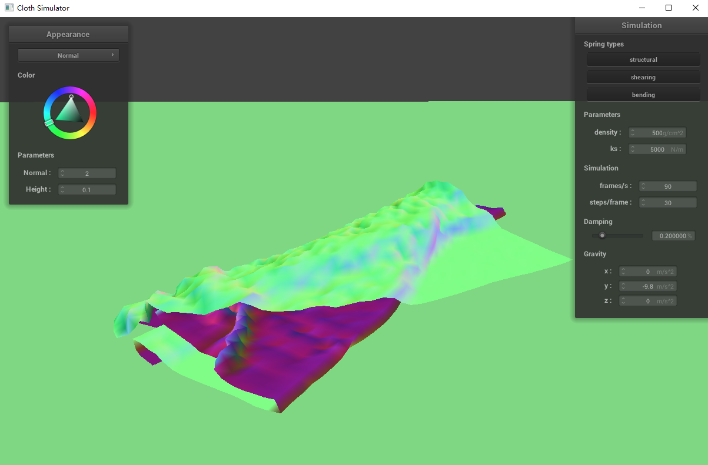
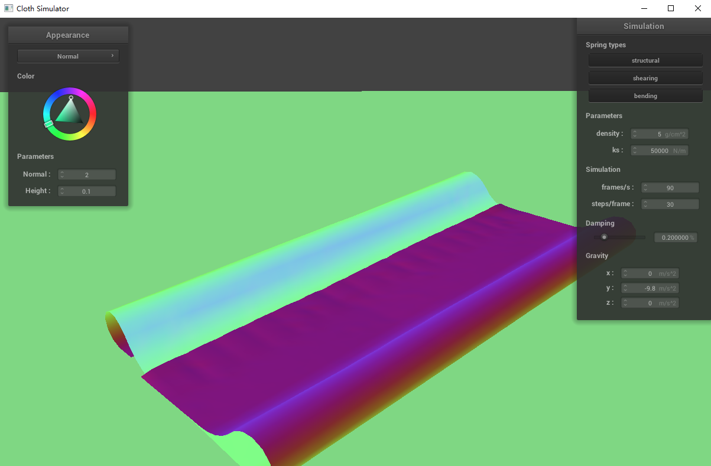

IE9 OR ABOVE AND JAVASCRIPT CAPABILITY IS REQUIRED TO
SUCCESSFULLY RENDER THIS DOCUMENT
HTML5 IS PREFERABLE BUT NOT REQUIRED
This site best viewed with Netscape Navigator:
This project aims to simulate fabric’s interaction with physical environment, with tweakable parameters of material, exterior influences and representation. It is also a playground for shader experiments.
Take some screenshots of scene/pinned2.json from a
viewing angle where you can clearly see the cloth wireframe to show the
structure of your point masses and springs.
| Spring Type | Screenshot |
|---|---|
| All | |
| bending |  |
| shearing | |
| structural |  |
Every lattice point corresponds to a point mass, and edges represent
the springs connecting them. Both bending and structural springs connect
to form a regular grid, while shearing springs connect diagonally.
Show us what the wireframe looks like (1) without any shearing constraints, (2) with only shearing constraints, and (3) with all constraints.
| Wireframe | |
|---|---|
| No shearing |  |
| Only shearing | |
| All |
Experiment with some the parameters in the simulation. Describe
the effects of changing the spring constant ks; how does
the cloth behave from start to rest with a very low ks? A
high ks? What about for density? What about
for damping? For each of the above, observe any noticeable
differences in the cloth compared to the default parameters and show us
some screenshots of those interesting differences and describe when they
occur. A higher ks makes the fabric feels more taut and
bouncy, and a lower ks makes it looser and less elastic.
Higher density exerts more force on every point mass and
makes the fabric feel heavier. damping acts as an
environmental resistance that damps the motion, which in some way can
reflect the viscosity of air. Several observations:
| Notes | |
|---|---|
(This doesn’t really show on screenshot) With density set to very
high (beyond 10000g/cm^2), part of fabric being stretched
taut will not stop bouncing around randomly after the fabric comes to
resting position. |
|
 |
When adjusting density to a lower value (which is more
like real life fabric density) while keeping ks at a
mismatched value (too high), fabric will come to rest with many ripples,
or even start flapping violently. |
This is an extreme case of density/ks
mismatching. More extreme values can cause out of range motions and
crash the simulation. |
Show us a screenshot of your shaded cloth from
scene/pinned4.json in its final resting state! If you
choose to use different parameters than the default ones, please list
them. With default parameters: 
Show us screenshots of your shaded cloth from
scene/sphere.json in its final resting state on the sphere
using the default ks = 5000 as well as with
ks = 500 and ks = 50000. Describe the
differences in the results.
ks |
Result |
|---|---|
| 500 |  |
| 5000 |  |
| 50000 |  |
Note that when ks is higher, the fabric becomes more
rigid.
Show us a screenshot of your shaded cloth lying peacefully at
rest on the plane. If you haven’t by now, feel free to express your
colorful creativity with the cloth! (You will need to complete Part 5
first to show custom colors for anything but the “Wireframe” material.)

Show us at least 3 screenshots that document how your cloth falls and folds on itself, starting with an early, initial self-collision and ending with the cloth at a more restful state (even if it is still slightly bouncy on the ground).
| Stage | Screenshot |
|---|---|
| Cascading onto the plane, no self-collision yet | |
| Bottom of the fabric starts self-colliding, repelling each other | |
| The fabric comes to a rest after some time |  |
Vary the density as well as ks and
describe with words and screenshots how they affect the behavior of the
cloth as it falls on itself.
| Note | |
|---|---|
| Default parameters | |
 |
As expected, a lower ks makes the fabric easier to
deform |
 |
A higher density just makes it heavier, which mostly
makes it fall faster and more compact |
| \(k_s\)\Density | 5 | 50 | 500 |
|---|---|---|---|
| 500 |  |
||
| 5000 |  | ||
| 50000 |  |  |